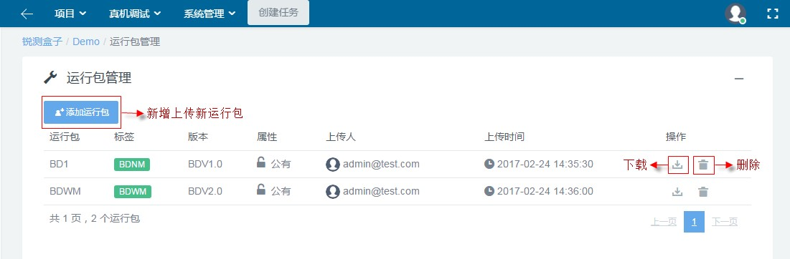
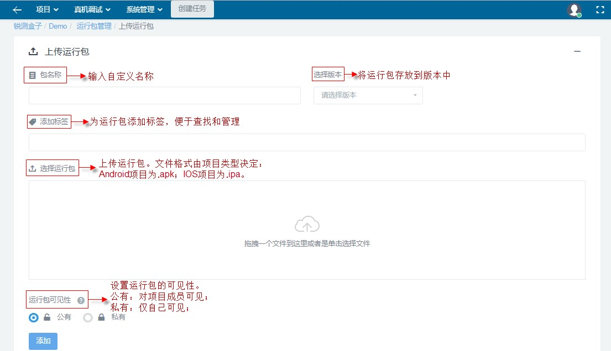

1.4.4 运行包管理
项目管理员和项目成员可以上传运行包，通过设置运行包的属性（公有/私有）选择对同项目的成员是否可见。此功能统一管理和存储运行包，方便重复使用运行包。如下图所示。

项目的运行包管理页面图
1.4.4.1 添加运行包
用户在运行包管理页面中，可以通过点击“添加运行包”上传运行包(App)。运行包的文件格式由项目类型决定。项目类型为Android，则只允许上传.apk文件；项目类型为IOS，则只允许上传 .ipa文件。如下图所示。

项目的添加运行包页面图